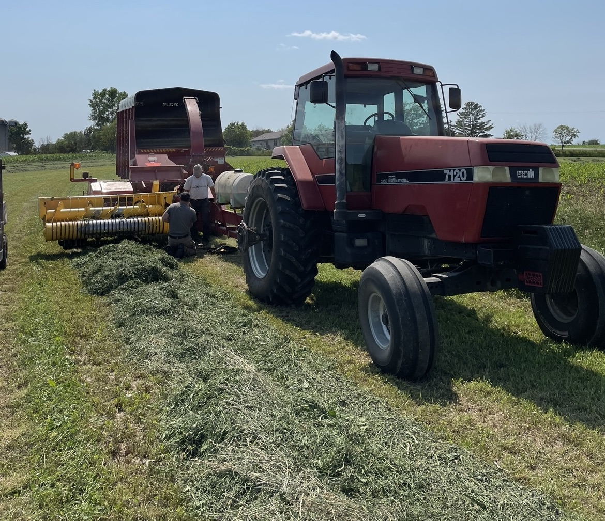

WELCOME
Klinkner Breezy Acres Dairy is a sixth-generation organic dairy farm in rural Cashton, WI, which has been proudly owned and operated by family for over 160 years.
The goal of the Klinkner Breezy Acres website is to share the farm’s history and success with other agriculturalists and educate consumers on the dairy industry.
What's Happening on the Farm
Haying Season is Upon Us
A New Addition on the Farm

Ally Had Her Calf
Wisconsin Dairy Facts
Courtesy of Dairy Farmers of Wisconsin